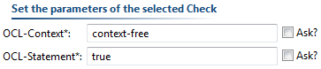
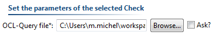
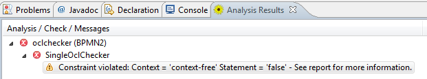

The OCL Check Plugin
Content:
The OCL Check Plugin contains two Subplugins.
The Single OCL Check performs a single OCL query with a given context and query string, while the Multi OCL Check uses the OCL Library to enable multiple OCL queries.

Figure: Overview of the OCL Check Plugins
The Single OCL Check needs two parameters: the context and the query string. The context is the name of the represented object class, like 'Task', 'Element' or for context free queries 'context-free'. If the context fits to an object the second parameter, the query string, will be executed on the object and will return a boolean value.

Figure: Parameters of the SingleOclCheck
The Multi OCL Check works similar to the
Single OCL Check. To enable multiple OCL Queries the OCL Library is used as a parameter.

Figure: Parameters of the MultiOclCheck
The Result View shows the results of the executed constraints. Details, like the objects which violates a constraint, can be found in the log.

Figure: Sample Result of an Analysis